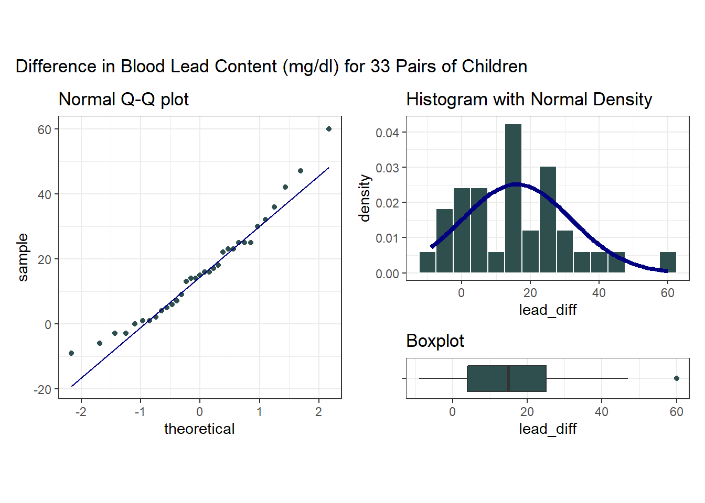

Chapter 1 Comparing Means/Quantities using Paired Samples
Here, we’ll consider the problem of estimating a confidence interval to describe the difference in population means (or medians) based on a comparison of two samples of quantitative data, gathered using a matched pairs design.
Specifically, we’ll use as our example the Lead in the Blood of Children study, described below.
1.1 The Lead in the Blood of Children Study
One of the best ways to eliminate a source of variation and the errors of interpretation associated with it is through the use of matched pairs. Each subject in one group is matched as closely as possible by a subject in the other group. If a 45-year-old African-American male with hypertension is given a [treatment designed to lower their blood pressure], then we give a second, similarly built 45-year old African-American male with hypertension a placebo.
- Good (2005), section 5.2.4
1.2 The Lead in the Blood of Children Study
Morton et al. (1982) studied the absorption of lead into the blood of children. This was a matched-sample study, where the exposed group of interest contained 33 children of parents who worked in a battery manufacturing factory (where lead was used) in the state of Oklahoma. Specifically, each child with a lead-exposed parent was matched to another child of the same age, exposure to traffic, and living in the same neighborhood whose parents did not work in lead-related industries. So the complete study had 66 children, arranged in 33 matched pairs. The outcome of interest, gathered from a sample of whole blood from each of the children, was lead content, measured in mg/dl.
One motivation for doing this study is captured in the Abstract from Morton et al. (1982).
It has been repeatedly reported that children of employees in a lead-related industry are at increased risk of lead absorption because of the high levels of lead found in the household dust of these workers.
The data are available in several places, including Table 5 of Pruzek and Helmreich (2009), in the BloodLead data set within the PairedData package in R, but we also make them available in the bloodlead.csv file. A table of the first few pairs of observations (blood lead levels for one child exposed to lead and the matched control) is shown below.
Parsed with column specification:
cols(
pair = col_character(),
exposed = col_double(),
control = col_double()
)# A tibble: 33 x 3
pair exposed control
<chr> <dbl> <dbl>
1 P01 38 16
2 P02 23 18
3 P03 41 18
4 P04 18 24
5 P05 37 19
6 P06 36 11
7 P07 23 10
8 P08 62 15
9 P09 31 16
10 P10 34 18
# ... with 23 more rows- In each pair, one child was exposed (to having a parent working in the factory) and the other was not.
- Otherwise, though, each child was very similar to its matched partner.
- The data under
exposedandcontrolare the blood lead content, in mg/dl.
Our primary goal will be to estimate the difference in lead content between the exposed and control children, and then use that sample estimate to make inferences about the difference in lead content between the population of all children like those in the exposed group and the population of all children like those in the control group.
1.2.1 Our Key Questions for a Paired Samples Comparison
- What is the population under study?
- All pairs of children living in Oklahoma near the factory in question, in which one had a parent working in a factory that exposed them to lead, and the other did not.
- What is the sample? Is it representative of the population?
- The sample consists of 33 pairs of one exposed and one control child.
- This is a case-control study, where the children were carefully enrolled to meet the design criteria. Absent any other information, we’re likely to assume that there is no serious bias associated with these pairs, and that assuming they represent the population effectively (and perhaps the broader population of kids whose parents work in lead-based industries more generally) may well be at least as reasonable as assuming they don’t.
- Who are the subjects / individuals within the sample?
- Each of our 33 pairs of children includes one exposed child and one unexposed (control) child.
- What data are available on each individual?
- The blood lead content, as measured in mg/dl of whole blood.
1.2.2 Lead Study Caveats
Note that the children were not randomly selected from general populations of kids whose parents did and did not work in lead-based industries.
- To make inferences to those populations, we must make strong assumptions to believe, for instance, that the sample of exposed children is as representative as a random sample of children with similar exposures across the world would be.
- The researchers did have a detailed theory about how the exposed children might be at increased risk of lead absorption, and in fact as part of the study gathered additional information about whether a possible explanation might be related to the quality of hygiene of the parents (all of them were fathers, actually) who worked in the factory.
- This is an observational study, so that the estimation of a causal effect between parental work in a lead-based industry and children’s blood lead content can be made, without substantial (and perhaps heroic) assumptions.
1.3 Exploratory Data Analysis for Paired Samples
We’ll begin by adjusting the data in two ways.
- We’d like that first variable (
pair) to be afactorrather than acharactertype in R, because we want to be able to summarize it more effectively. So we’ll make that change. - Also, we’d like to calculate the difference in lead content between the exposed and the control children in each pair, and we’ll save that within-pair difference in a variable called
lead_diff. We’ll takelead_diff=exposed-controlso that positive values indicate increased lead in the exposed child.
bloodlead_original <- bloodlead
bloodlead <- bloodlead_original %>%
mutate(pair = factor(pair),
lead_diff = exposed - control)
bloodlead# A tibble: 33 x 4
pair exposed control lead_diff
<fct> <dbl> <dbl> <dbl>
1 P01 38 16 22
2 P02 23 18 5
3 P03 41 18 23
4 P04 18 24 -6
5 P05 37 19 18
6 P06 36 11 25
7 P07 23 10 13
8 P08 62 15 47
9 P09 31 16 15
10 P10 34 18 16
# ... with 23 more rows1.3.1 The Paired Differences
To begin, we focus on lead_diff for our exploratory work, which is the exposed - control difference in lead content within each of the 33 pairs. So, we’ll have 33 observations, as compared to the 462 in the serum zinc data, but most of the same tools are still helpful.
p1 <- ggplot(bloodlead, aes(sample = lead_diff)) +
geom_qq(col = "darkslategray") + geom_qq_line(col = "navy") +
theme(aspect.ratio = 1) +
labs(title = "Normal Q-Q plot")
p2 <- ggplot(bloodlead, aes(x = lead_diff)) +
geom_histogram(aes(y = stat(density)),
binwidth = 5, fill = "darkslategray", col = "white") +
stat_function(fun = dnorm,
args = list(mean = mean(bloodlead$lead_diff),
sd = sd(bloodlead$lead_diff)),
col = "navy", lwd = 1.5) +
labs(title = "Histogram with Normal Density")
p3 <- ggplot(bloodlead, aes(x = lead_diff, y = "")) +
geom_boxplot(fill = "darkslategray", outlier.color = "darkslategray") +
labs(title = "Boxplot", y = "")
p1 + (p2 / p3 + plot_layout(heights = c(4,1))) +
plot_annotation(title = "Difference in Blood Lead Content (mg/dl) for 33 Pairs of Children")
Note that in all of this work, I plotted the paired differences. One obvious way to tell if you have paired samples is that you can pair every single subject from one exposure group to a unique subject in the other exposure group. Everyone has to be paired, so the sample sizes will always be the same in the two groups.
1.3.2 Numerical Summaries
min Q1 median Q3 max mean sd n missing
-9 4 15 25 60 15.9697 15.86365 33 0# A tibble: 1 x 1
skew1
<dbl>
1 0.06111.3.3 Impact of Matching - Scatterplot and Correlation
Here, the data are paired by the study through matching on neighborhood, age and exposure to traffic. Each individual child’s outcome value is part of a pair with the outcome value for his/her matching partner. We can see this pairing in several ways, perhaps by drawing a scatterplot of the pairs.
ggplot(bloodlead, aes(x = control, y = exposed)) +
geom_point(size = 2) +
geom_smooth(method = "lm", formula = y ~ x, se = FALSE) +
geom_text(x = 20, y = 65, col = "blue",
label =
paste("Pearson r = ",
round(bloodlead %$%
cor(control, exposed),2))) +
labs(title = "Paired Samples in Blood Lead study",
x = "Blood Lead Content (mg/dl) in Control Child",
y = "Blood Lead Content (mg/dl) in Exposed Child")
Each point here represents a pair of observations, one from a control child, and one from the matched exposed child. If there is a strong linear relationship (usually with a positive slope, thus positive correlation) between the paired outcomes, then the pairing will be more helpful in terms of improving statistical power of the estimates we build than if there is a weak relationship.
- The stronger the Pearson correlation coefficient, the more helpful pairing will be.
- Here, a straight line model using the control child’s blood lead content accounts for about 3.2% of the variation in blood lead content in the exposed child.
- As it turns out, pairing will have only a modest impact here on the inferences we draw in the study. We still will treat the data as paired, despite this.
1.4 Looking at Separate Samples: Using pivot_longer
For the purpose of estimating the difference between the exposed and control children, the summaries of the paired differences are what we’ll need.
In some settings, however, we might also look at a boxplot, or violin plot, or ridgeline plot that showed the distributions of exposed and control children separately. But we will run into trouble because one variable (blood lead content) is spread across multiple columns (control and exposed.) The solution is to “pivot” the tibble from its current format to build a new, tidy tibble. Because the data aren’t tidied here, so that we have one row for each subject and one column for each variable, we have to do some work to get them in that form for our usual plotting strategy to work well.
pivot_longer()“lengthens” the data, increasing the number of rows and decreasing the number of columns.pivot_wider()performs the inverse of that transformation, “widening” the data.
In our original bloodlead data, if we drop the lead_diff addition we made, we have wide data, with each row representing two different subjects.
# A tibble: 3 x 3
pair exposed control
<chr> <dbl> <dbl>
1 P01 38 16
2 P02 23 18
3 P03 41 18And what we want to accomplish is to have one row for each subject, instead of one row for each pair of subjects. So we want to make the data longer.
bloodlead_longer <- bloodlead_original %>%
pivot_longer(
cols = -c(pair),
names_to = "status",
values_to = "lead_level")
bloodlead_longer# A tibble: 66 x 3
pair status lead_level
<chr> <chr> <dbl>
1 P01 exposed 38
2 P01 control 16
3 P02 exposed 23
4 P02 control 18
5 P03 exposed 41
6 P03 control 18
7 P04 exposed 18
8 P04 control 24
9 P05 exposed 37
10 P05 control 19
# ... with 56 more rowsFor more on this approach (in this case, we’re making the data “longer” and its opposite would be be making the data “wider”), visit the Tidy data chapter in Grolemund and Wickham (2019) and the tidyr repository on Github at https://github.com/tidyverse/tidyr.
And now, we can plot as usual to compare the two samples.
First, we’ll look at a boxplot, showing all of the data.
ggplot(bloodlead_longer, aes(x = status, y = lead_level)) +
geom_violin() +
geom_boxplot(aes(fill = status), width = 0.2) +
scale_fill_viridis_d(begin = 0.5) +
guides(fill = FALSE) +
coord_flip() +
labs(title = "Boxplot of Lead Content in Exposed and Control kids") +
theme_bw()
We’ll also look at a ridgeline plot, because Dr. Love likes them, even though they’re really more useful when we’re comparing more than two samples.
ggplot(bloodlead_longer, aes(x = lead_level, y = status, fill = status)) +
ggridges::geom_density_ridges(scale = 0.9) +
guides(fill = FALSE) +
labs(title = "Lead Content in Exposed and Control kids") +
ggridges::theme_ridges()Picking joint bandwidth of 4.01
Both the center and the spread of the distribution are substantially larger in the exposed group than in the controls. Of course, numerical summaries show these patterns, too.
| status | min | Q1 | median | Q3 | max | mean | sd | n | missing |
|---|---|---|---|---|---|---|---|---|---|
| control | 7 | 13 | 16 | 19 | 25 | 15.88 | 4.54 | 33 | 0 |
| exposed | 10 | 21 | 34 | 39 | 73 | 31.85 | 14.41 | 33 | 0 |
1.5 Estimating the Difference in Means with Paired Samples
Suppose we want to estimate the difference in the mean blood level across the population of children represented by the sample taken in this study. To do so, we must take advantage of the matched samples design, and complete our estimation on the paired differences, treating them as if they were a single sample of data.
One way to accomplish this is simply to run the usual intercept-only linear regression model on the paired differences.
model_lead <- lm(lead_diff ~ 1, data = bloodlead)
tidy(model_lead, conf.int = TRUE, conf.level = 0.90) %>%
kable(digits = 2)| term | estimate | std.error | statistic | p.value | conf.low | conf.high |
|---|---|---|---|---|---|---|
| (Intercept) | 15.97 | 2.76 | 5.78 | 0 | 11.29 | 20.65 |
Our point estimate for the difference (exposed - control) in lead levels is 15.97 mg/dl, and our 90% confidence interval is (11.29, 20.65) mg/dl.
1.5.1 Paired Data in Longer Format?
If we had the data in “longer” format, as in bloodlead_longer, with the pairs identified by the pair variable, then we could obtained the same confidence interval using:
model2_lead <- lm(lead_level ~ status + factor(pair), data = bloodlead_longer)
tidy(model2_lead, conf.int = TRUE, conf.level = 0.90) # A tibble: 34 x 7
term estimate std.error statistic p.value conf.low conf.high
<chr> <dbl> <dbl> <dbl> <dbl> <dbl> <dbl>
1 (Intercept) 19.0 8.05 2.36 0.0244 5.38 32.7
2 statusexposed 16.0 2.76 5.78 0.00000204 11.3 20.6
3 factor(pair)P02 -6.50 11.2 -0.579 0.566 -25.5 12.5
4 factor(pair)P03 2.5 11.2 0.223 0.825 -16.5 21.5
5 factor(pair)P04 -6.00 11.2 -0.535 0.596 -25.0 13.0
6 factor(pair)P05 1. 11.2 0.0891 0.930 -18.0 20.0
7 factor(pair)P06 -3.50 11.2 -0.312 0.757 -22.5 15.5
8 factor(pair)P07 -10.5 11.2 -0.936 0.356 -29.5 8.50
9 factor(pair)P08 11.5 11.2 1.03 0.313 -7.50 30.5
10 factor(pair)P09 -3.50 11.2 -0.312 0.757 -22.5 15.5
# ... with 24 more rowsand the key elements are found in the statusexposed row, which we can focus on nicely (since the output of the tidy() function is always a tibble) with:
tidy(model2_lead, conf.int = TRUE, conf.level = 0.90) %>%
filter(term == "statusexposed") %>%
knitr::kable(digits = 2)| term | estimate | std.error | statistic | p.value | conf.low | conf.high |
|---|---|---|---|---|---|---|
| statusexposed | 15.97 | 2.76 | 5.78 | 0 | 11.29 | 20.65 |
and again, we have our 90% confidence interval estimate of the population mean difference between exposed and control children.
1.6 Matched Pairs vs. Two Independent Samples
These data were NOT obtained from two independent samples, but rather from matched pairs.
- We only have matched pairs if each individual observation in the “treatment” group is matched to one and only one observation in the “control” group by the way in which the data were gathered. Paired (or matched) data can arise in several ways.
- The most common is a “pre-post” study where subjects are measured both before and after an exposure happens.
- In observational studies, we often match up subjects who did and did not receive an exposure so as to account for differences on things like age, sex, race and other covariates. This is what happens in the Lead in the Blood of Children study.
- If the data are from paired samples, we should (and in fact) must form paired differences, with no subject left unpaired.
- If we cannot line up the data comparing two samples of quantitative data so that the links between the individual “treated” and “control” observations to form matched pairs are evident, then the data are not paired.
- If the sample sizes were different, we’d know we have independent samples, because matched pairs requires that each subject in the “treated” group be matched to a single, unique member of the “control” group, and thus that we have exactly as many “treated” as “control” subjects.
- But having as many subjects in one treatment group as the other (which is called a balanced design) is only necessary, and not sufficient, for us to conclude that matched pairs are used.
As Bock, Velleman, and De Veaux (2004) suggest,
… if you know the data are paired, you can take advantage of that fact - in fact, you must take advantage of it. … You must decide whether the data are paired from understanding how they were collected and what they mean. … There is no test to determine whether the data are paired.
1.7 Estimating the Population Mean of the Paired Differences
There are two main approaches used frequently to estimate the population mean of paired differences.
- Estimation using the t distribution (and assuming at least an approximately Normal distribution for the paired differences)
- Estimation using the bootstrap (which doesn’t require the Normal assumption)
In addition, we might consider estimating an alternate statistic when the data don’t follow a symmetric distribution, like the median, with the bootstrap. In other settings, a rank-based alternative called the Wilcoxon signed rank test is available to estimate a psuedo-median. All of these approaches mirror what we did with a single sample, earlier in these Notes.
1.8 t-based CI for Population Mean of Paired Differences, \(\mu_d\).
In R, there are at least five different methods for obtaining the t-based confidence interval for the population difference in means between paired samples. They are all mathematically identical. The key idea is to calculate the paired differences (exposed - control, for example) in each pair, and then treat the result as if it were a single sample and apply the methods developed for that situation earlier in these Notes.
1.8.1 Method 1
We can use the single-sample approach, applied to the variable containing the paired differences. Let’s build a 90% two-sided confidence interval for the population mean of the difference in blood lead content across all possible pairs of an exposed (parent works in a lead-based industry) and a control (parent does not) child, \(\mu_d\).
One Sample t-test
data: lead_diff
t = 5.783, df = 32, p-value = 2.036e-06
alternative hypothesis: true mean is not equal to 0
90 percent confidence interval:
11.29201 20.64738
sample estimates:
mean of x
15.9697 | estimate | statistic | p.value | parameter | conf.low | conf.high | method | alternative |
|---|---|---|---|---|---|---|---|
| 15.97 | 5.78 | 0 | 32 | 11.29 | 20.65 | One Sample t-test | two.sided |
The 90% confidence interval is (11.29, 20.65) according to this t-based procedure. An appropriate interpretation of the 90% two-sided confidence interval would be:
- (11.29, 20.65) milligrams per deciliter is a 90% two-sided confidence interval for the population mean difference in blood lead content between exposed and control children.
- Our point estimate for the true population difference in mean blood lead content is 15.97 mg.dl. The values in the interval (11.29, 20.65) mg/dl represent a reasonable range of estimates for the true population difference in mean blood lead content, and we are 90% confident that this method of creating a confidence interval will produce a result containing the true population mean difference.
- Were we to draw 100 samples of 33 matched pairs from the population described by this sample, and use each such sample to produce a confidence interval in this manner, approximately 90 of those confidence intervals would cover the true population mean difference in blood lead content levels.
1.8.2 Method 2
Or, we can apply the single-sample approach to a calculated difference in blood lead content between the exposed and control groups. Here, we’ll get a 95% two-sided confidence interval for \(\mu_d\), instead of the 90% interval we obtained above.
One Sample t-test
data: exposed - control
t = 5.783, df = 32, p-value = 2.036e-06
alternative hypothesis: true mean is not equal to 0
95 percent confidence interval:
10.34469 21.59470
sample estimates:
mean of x
15.9697 | estimate | statistic | p.value | parameter | conf.low | conf.high | method | alternative |
|---|---|---|---|---|---|---|---|
| 15.97 | 5.78 | 0 | 32 | 10.34 | 21.59 | One Sample t-test | two.sided |
1.8.3 Method 3
Or, we can provide R with two separate samples (unaffected and affected) and specify that the samples are paired. Here, we’ll get a 99% one-sided confidence interval (lower bound) for \(\mu_d\), the population mean difference in blood lead content.
tt3 <- bloodlead %$% t.test(exposed, control, conf.level = 0.99,
paired = TRUE, alt = "greater")
tt3
Paired t-test
data: exposed and control
t = 5.783, df = 32, p-value = 1.018e-06
alternative hypothesis: true difference in means is greater than 0
99 percent confidence interval:
9.207658 Inf
sample estimates:
mean of the differences
15.9697 | estimate | statistic | p.value | parameter | conf.low | conf.high | method | alternative |
|---|---|---|---|---|---|---|---|
| 15.97 | 5.78 | 0 | 32 | 9.21 | Inf | Paired t-test | greater |
Again, the three different methods using t.test for paired samples will all produce identical results if we feed them the same confidence level and type of interval (two-sided, greater than or less than).
1.8.4 Method 4
We can also use an intercept-only linear regression model to estimate the population mean of the paired differences with a two-tailed confidence interval, by creating a variable containing those paired differences.
model_lead <- lm(lead_diff ~ 1, data = bloodlead)
tidy(model_lead, conf.int = TRUE, conf.level = 0.95)# A tibble: 1 x 7
term estimate std.error statistic p.value conf.low conf.high
<chr> <dbl> <dbl> <dbl> <dbl> <dbl> <dbl>
1 (Intercept) 16.0 2.76 5.78 0.00000204 10.3 21.61.8.5 Method 5
If we have the data in a longer format, with a variable identifying the matched pairs, we can use a different specification for a linear model to obtain the same estimate.
model2_lead <- lm(lead_level ~ status + factor(pair), data = bloodlead_longer)
tidy(model2_lead, conf.int = TRUE, conf.level = 0.95) %>%
filter(term == "statusexposed")# A tibble: 1 x 7
term estimate std.error statistic p.value conf.low conf.high
<chr> <dbl> <dbl> <dbl> <dbl> <dbl> <dbl>
1 statusexposed 16.0 2.76 5.78 0.00000204 10.3 21.61.8.6 Assumptions
If we are building a confidence interval based on a sample of observations drawn from a population, then we must pay close attention to the assumptions of those procedures. The confidence interval procedure for the population mean paired difference \(\mu_d\) using the t distribution assumes that:
- We want to estimate the population mean paired difference \(\mu_d\).
- We have drawn a sample of paired differences at random from the population of interest.
- The sampled paired differences are drawn from the population set of paired differences independently and have identical distributions.
- The population follows a Normal distribution. At the very least, the sample itself is approximately Normal.
1.9 Bootstrap CI for mean difference using paired samples
The same bootstrap approach is used for paired differences as for a single sample. We use the smean.cl.boot() function in the Hmisc package to obtain bootstrap confidence intervals for the population mean, \(\mu_d\), of the paired differences in blood lead content.
Mean Lower Upper
15.96970 10.81742 21.48788 Note that in this case, the confidence interval for the difference in means is a bit less wide than the 95% confidence interval generated by the t test, which was (10.34, 21.59). It’s common for the bootstrap to produce a narrower range (i.e. an apparently more precise estimate) for the population mean, but it’s not automatic that the endpoints from the bootstrap will be inside those provided by the t test, either.
For example, this bootstrap CI doesn’t contain the t-test based interval, since its upper bound exceeds that of the t-based interval:
Mean Lower Upper
15.96970 10.81667 21.66667 This demonstration aside, the appropriate thing to do when applying the bootstrap to specify a confidence interval is select a seed and the number (B = 1,000 or 10,000, usually) of desired bootstrap replications, then run the bootstrap just once and move on, rather than repeating the process multiple times looking for a particular result.
1.9.1 Assumptions
The bootstrap confidence interval procedure for the population mean (or median) of a set of paired differences assumes that:
- We want to estimate the population mean \(\mu_d\) of the paired differences (or the population median).
- We have drawn a sample of observations at random from the population of interest.
- The sampled observations are drawn from the population of paired differences independently and have identical distributions.
- We are willing to put up with the fact that different people (not using the same random seed) will get somewhat different confidence interval estimates using the same data.
As we’ve seen, a major part of the bootstrap’s appeal is the ability to relax some assumptions.
1.10 Wilcoxon Signed Rank-based CI for paired samples
We could also use the Wilcoxon signed rank procedure to generate a CI for the pseudo-median of the paired differences.
Wilcoxon signed rank test with continuity correction
data: lead_diff
V = 499, p-value = 1.155e-05
alternative hypothesis: true location is not equal to 0
90 percent confidence interval:
10.99992 20.49998
sample estimates:
(pseudo)median
15.49996 # A tibble: 1 x 7
estimate statistic p.value conf.low conf.high method alternative
<dbl> <dbl> <dbl> <dbl> <dbl> <chr> <chr>
1 15.5 499 1.15e-5 11.0 20.5 Wilcoxon signed ra~ two.sided As in the one sample case, we can revise this code slightly to specify a different confidence level, or gather a one-sided rather than a two-sided confidence interval.
1.10.1 Assumptions
The Wilcoxon signed rank confidence interval procedure in working with paired differences assumes that:
- We want to estimate the population pseudo-median of the paired differences.
- We have drawn a sample of observations at random from the population of paired differences of interest.
- The sampled observations are drawn from the population of paired differences independently and have identical distributions.
- The population follows a symmetric distribution. At the very least, the sample itself shows no substantial skew, so that the sample pseudo-median is a reasonable estimate for the population median.
1.11 Choosing a Confidence Interval Approach
Suppose we want to find a confidence interval for the mean of a population, \(\mu\), or, the population mean difference \(\mu_{d}\) between two populations based on matched pairs.
- If we are willing to assume that the population distribution is Normal
- we usually use a t-based CI.
- If we are unwilling to assume that the population is Normal,
- use a bootstrap procedure to get a CI for the population mean, or even the median
- but are willing to assume the population is symmetric, consider a Wilcoxon signed rank procedure to get a CI for the median, rather than the mean.
The two methods you’ll use most often are the bootstrap (especially if the data don’t appear to be at least pretty well fit by a Normal model) and the t-based confidence intervals (if the data do appear to fit a Normal model reasonably well.)
1.12 Conclusions for the bloodlead study
Using any of these procedures, we would conclude that the null hypothesis (that the true mean of the paired differences is 0 mg/dl) is not tenable, and that it should be rejected at the 10% significance level. The smaller the p value, the stronger is the evidence that the null hypothesis is incorrect, and in this case, we have some fairly tiny p values.
| Procedure | Comparing … | 90% CI for \(\mu_{Exp - Control}\) |
|---|---|---|
| Paired t | Means | 11.3, 20.6 |
| Wilcoxon signed rank | Pseudo-medians | 11, 20.5 |
| Bootstrap CI | Means | 11.6, 20.6 |
Note that one-sided or one-tailed hypothesis testing procedures work the same way for paired samples as they did for a single sample.
1.13 The Sign test
The sign test is something we’ve skipped in our discussion so far. It is a test for consistent differences between pairs of observations, just as the paired t, Wilcoxon signed rank and bootstrap for paired samples can provide. It has the advantage that it is relatively easy to calculate by hand, and that it doesn’t require the paired differences to follow a Normal distribution. In fact, it will even work if the data are substantially skewed.
- Calculate the paired difference for each pair, and drop those with difference = 0.
- Let \(N\) be the number of pairs that remain, so there are 2N data points.
- Let \(W\), the test statistic, be the number of pairs (out of N) in which the difference is positive.
- Assuming that \(H_0\) is true, then \(W\) follows a binomial distribution with probability 0.5 on \(N\) trials.
For example, consider our data on blood lead content:
[1] 22 5 23 -6 18 25 13 47 15 16 6 1 2 7 0 4 -9 -3 36 25 1 16 42 30 25
[26] 23 32 17 9 -3 60 14 14| Difference | # of Pairs |
|---|---|
| Greater than zero | 28 |
| Equal to zero | 1 |
| Less than zero | 4 |
So we have \(N\) = 32 pairs, with \(W\) = 28 that are positive. We then use the binom.test approach in R:
Exact binomial test
data: 28 and 32
number of successes = 28, number of trials = 32, p-value = 1.93e-05
alternative hypothesis: true probability of success is not equal to 0.5
95 percent confidence interval:
0.7100516 0.9648693
sample estimates:
probability of success
0.875 - A one-tailed test can be obtained by substituting in “less” or “greater” as the alternative of interest.
- The confidence interval provided doesn’t relate back to our original population means, of course. It’s just showing the confidence interval around the probability of the exposed mean being greater than the control mean for a pair of children.
1.14 A More Complete Decision Support Tool: Comparing Means
Are these paired or independent samples?
If paired samples, then are the paired differences approximately Normally distributed?
- If yes, then a paired t test or confidence interval is likely the best choice.
- If no, is the main concern outliers (with generally symmetric data), or skew?
- If the paired differences appear to be generally symmetric but with substantial outliers, a Wilcoxon signed rank test is an appropriate choice, as is a bootstrap confidence interval for the population mean of the paired differences.
- If the paired differences appear to be seriously skewed, then we’ll usually build a bootstrap confidence interval, although a sign test is another reasonable possibility, although it doesn’t provide a confidence interval for the population mean of the paired differences.
If independent, is each sample Normally distributed?
- No –> use Wilcoxon-Mann-Whitney rank sum test or bootstrap via
bootdif. - Yes –> are sample sizes equal?
- Balanced Design (equal sample sizes) - use pooled t test
- Unbalanced Design - use Welch test
- No –> use Wilcoxon-Mann-Whitney rank sum test or bootstrap via
1.15 Paired (Dependent) vs. Independent Samples
One area that consistently trips students up in this course is the thought process involved in distinguishing studies comparing means that should be analyzed using dependent (i.e. paired or matched) samples and those which should be analyzed using independent samples. A dependent samples analysis uses additional information about the sample to pair/match subjects receiving the various exposures. That additional information is not part of an independent samples analysis (unpaired testing situation.) The reasons to do this are to (a) increase statistical power, and/or (b) reduce the effect of confounding. Here are a few thoughts on the subject.
In the design of experiments, blocking is the term often used for the process of arranging subjects into groups (blocks) that are similar to one another. Typically, a blocking factor is a source of variability that is not of primary interest to the researcher An example of a blocking factor might be the sex of a patient; by blocking on sex, this source of variability is controlled for, thus leading to greater accuracy.
If the sample sizes are not balanced (not equal), the samples must be treated as independent, since there would be no way to precisely link all subjects. So, if we have 10 subjects receiving exposure A and 12 subjects receiving exposure B, a dependent samples analysis (such as a paired t test) is not correct.
The key element is a meaningful link between each observation in one exposure group and a specific observation in the other exposure group. Given a balanced design, the most common strategy indicating dependent samples involves two or more repeated measures on the same subjects. For example, if we are comparing outcomes before and after the application of an exposure, and we have, say, 20 subjects who provide us data both before and after the exposure, then the comparison of results before and after exposure should use a dependent samples analysis. The link between the subjects is the subject itself - each exposed subject serves as its own control.
The second most common strategy indicating dependent samples involves deliberate matching of subjects receiving the two exposures. A matched set of observations (often a pair, but it could be a trio or quartet, etc.) is determined using baseline information and then (if a pair is involved) one subject receives exposure A while the other member of the pair receives exposure B, so that by calculating the paired difference, we learn about the effect of the exposure, while controlling for the variables made similar across the two subjects by the matching process.
In order for a dependent samples analysis to be used, we need (a) a link between each observation across the exposure groups based on the way the data were collected, and (b) a consistent measure (with the same units of measurement) so that paired differences can be calculated and interpreted sensibly.
If the samples are collected to facilitate a dependent samples analysis, the correlation of the outcome measurements across the groups will often be moderately strong and positive. If that’s the case, then the use of a dependent samples analysis will reduce the effect of baseline differences between the exposure groups, and thus provide a more precise estimate. But even if the correlation is quite small, a dependent samples analysis should provide a more powerful estimate of the impact of the exposure on the outcome than would an independent samples analysis with the same number of observations.
1.15.1 Three “Tricky” Examples
Suppose we take a convenient sample of 200 patients from the population of patients who complete a blood test in April 2017 including a check of triglycerides, and who have a triglyceride level in the high category (200 to 499 mg/dl). Next, we select a patient at random from this group of 200 patients, and then identify another patient from the group of 200 who is the same age (to within 2 years) and also the same sex. We then randomly assign our intervention to one of these two patients and usual care without our intervention to the other patient. We then set these two patients aside and return to our original sample, repeating the process until we cannot find any more patients in the same age range and of the same gender. This generates a total of 77 patients who receive the intervention and 77 who do not. If we are trying to assess the effect of our intervention on triglyceride level in October 2017 using this sample of 154 people, should we use dependent (paired) or independent samples?
Suppose we take a convenient sample of 77 patients from the population of patients who complete a blood test in April 2017 including a check of triglycerides, and who have a triglyceride level in the high category (200 to 499 mg/dl). Next, we take a convenient sample of 77 patients from the population of patients who complete a blood test in May 2017 including a check of triglycerides, and who have a triglyceride level in the high category (200 to 499 mg/dl). We flip a coin to determine whether the intervention will be given to each of the 77 patients from April 2017 (if the coin comes up “HEADS”) or instead to each of the 77 patients from May 2017 (if the coin comes up “TAILS”). Then, we assign our intervention to the patients seen in the month specified by the coin and assign usual care without our intervention to the patients seen in the other month. If we are trying to assess the effect of our intervention on triglyceride level in October 2017 using this sample of 154 people, should we use dependent (paired) or independent samples?
Suppose we take a convenient sample of 200 patients from the population of patients who complete a blood test in April 2017 including a check of triglycerides, and who have a triglyceride level in the high category (200 to 499 mg/dl). For each patient, we re-measure them again in October 2017, again checking their triglyceride level. But in between, we take the first 77 of the patients in a randomly sorted list and assign them to our intervention (which takes place from June through September 2017) and take an additional group of 77 patients from the remaining part of the list and assign them to usual care without our intervention over the same time period. If we are trying to assess the effect of our intervention on each individual’s change in triglyceride level (from April/May to October) using this sample of 154 people, should we use dependent (paired) or independent samples?
1.15.2 Answers for the Three “Tricky” Examples
Answer for 1. Our first task is to identify the outcome and the exposure groups. Here, we are comparing the distribution of our outcome (triglyceride level in October) across two exposures: (a) receiving the intervention and (b) not receiving the intervention. We have a sample of 77 patients receiving the intervention, and a different sample of 77 patients receiving usual care. Each of the 77 subjects receiving the intervention is matched (on age and sex) to a specific subject not receiving the intervention. So, we can calculate paired differences by taking the triglyceride level for the exposed member of each pair and subtracting the triglyceride level for the usual care member of that same pair. Thus our comparison of the exposure groups should be accomplished using a dependent samples analysis, such as a paired t test.
Answer for 2. Again, we begin by identfying the outcome (triglyceride level in October) and the exposure groups. Here, we compare two exposures: (a) receiving the intervention and (b) receiving usual care. We have a sample of 77 patients receiving the intervention, and a different sample of 77 patients receiving usual care. But there is no pairing or matching involved. There is no connection implied by the way that the data were collected that implies that, for example, patient 1 in the intervention group is linked to any particular subject in the usual care group. So we need to analyze the data using independent samples.
Answer for 3. Once again, we identfy the outcome (now it is the within-subject change in triglyceride level from April to October) and the exposure groups. Here again, we compare two exposures: (a) receiving the intervention and (b) receiving usual care. We have a sample of 77 patients receiving the intervention, and a different sample of 77 patients receiving usual care. But again, there is no pairing or matching between the patients receiving the intervention and the patients receiving usual care. While each outcome value is a difference (or change) in triglyceride levels, there’s no connection implied by the way that the data were collected that implies that, for example, patient 1 in the intervention group is linked to any particular subject in the usual care group. So, again, we need to analyze the data using independent samples.
For more background and fundamental material, you might consider the Wikipedia pages on Paired Difference Test and on Blocking (statistics).
References
Bock, David E., Paul F. Velleman, and Richard D. De Veaux. 2004. Stats: Modelling the World. Boston MA: Pearson Addison-Wesley.
Good, Phillip I. 2005. Introduction to Statistics Through Resampling Methods and R/S-Plus. Hoboken, NJ: Wiley.
Grolemund, Garrett, and Hadley Wickham. 2019. R for Data Science. O’Reilly. http://r4ds.had.co.nz/.
Morton, D., A. Saah, S. Silberg, W. Owens, M. Roberts, and M. Saah. 1982. “Lead Absorption in Children of Employees in a Lead Related Industry.” American Journal of Epidemiology 115: 549–55.
Pruzek, Robert M., and James E. Helmreich. 2009. “Enhancing Dependent Sample Analyses with Graphics.” Journal of Statistics Education 17(1). http://ww2.amstat.org/publications/jse/v17n1/helmreich.html.